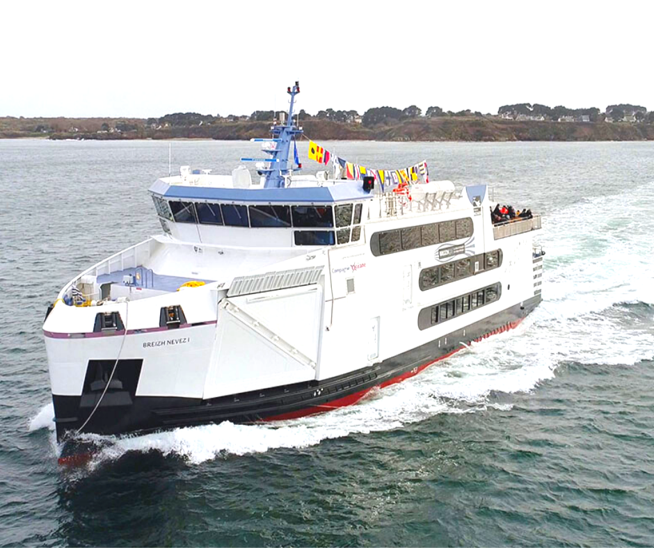

| Breizh Nevez | Informations |
|---|---|
| Type | Ferry |
| Pavillon | France |
| Armateur propriétaire | Région Bretagne |
| IMO number | 9835252 |
| Armateur gérant | Compagnie Océane |
| Construit en | 2018 |
| Tonnage brut / net | 1104 / 331 ums |
| Chantier | Piriou Concarneau |
| Port en lourd | 156 tonnes |
| Motorisation | 2 moteurs ABC 6DXC |
| Capacité | 300 passagers et 18 véhicules |
| Propulsion | 2 hélices |
| Dimensions | 43,78 x 11,30 x 3,90 m |
| Puissance | 1324 kW |
| Tirant d'eau | 2,50 m |
| Vitesse | 11,5 nœuds |


Pour revenir à la page d'accueil, veuillez cliquer sur le bouton suivant
Retour vers l'accueil